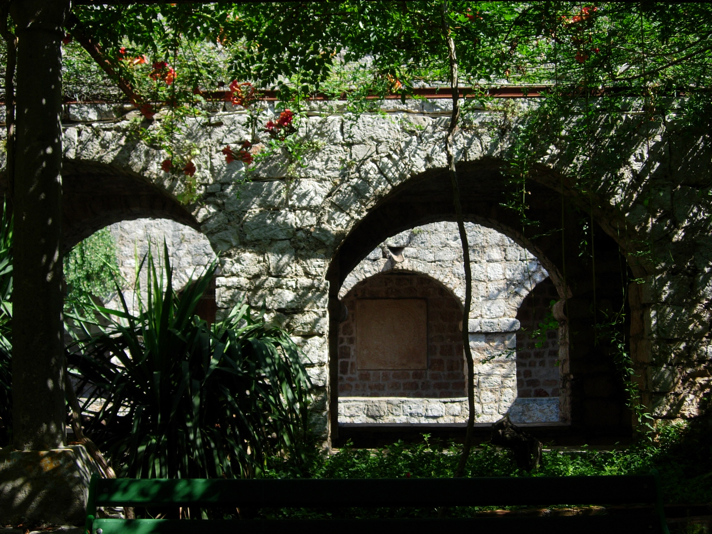
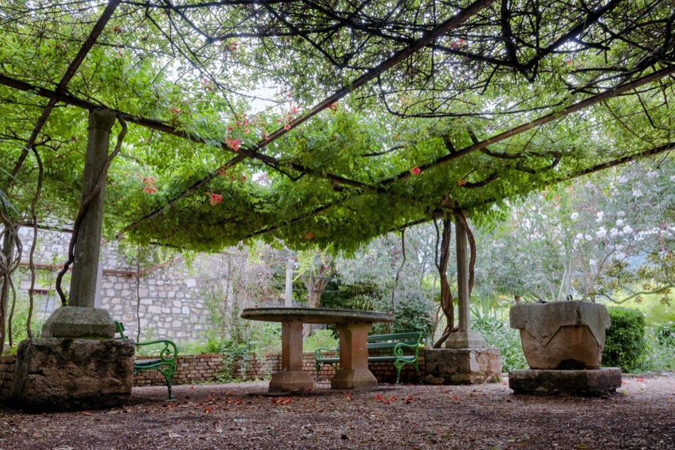

About Petar Hektorović pond
The most well-known structure and a representation of the Old Town is Peter Hektorović's fortress, his fortified summer home and the place where he wrote Fishing and Fishermen's Complaining, the first realistic epic of the Croatian Renaissance.
This fortress was carefully constructed by the Christian thinker and poet of the Renaissance, and it was just as important to him as his most important piece of writing. Hektorović's vision of constructing a microcosm a small enclosed world where all of God's creations fish, birds, plants, and people had space to live was accomplished by the construction of Tvrdalj.

The most recognizable part of Tvrdalj is the pond, which is surrounded by a porch and contains free living fish “mullet” and a small tower with pigeon and sparrow nests made of stone. The pond was probably built on the ruins of some old swimming pool or harbor structure and behind it on the south is a well kept lawn with plants that his friends sent to him.
In addition the pond is covered with inscriptions, the largest of which conveys a message of transience “Remember that nothing can save you from death, not even fame, fortune or aging”.

A small but fascinating ethnographic collection of objects from everyday island life and those connected to the economy. Particularly wine and olive growing, can be found in Hektorović's Tvrdalj western wing. Many of the original pieces, many of which are still present today as an essential component of a typical Dalmatian tavern, were preserved and used to create the collection in 1964.
Map and general information
Address: Priko b.b, 21460, Stari Grad
Phone: 092 225 2391
Open: Monday - Sunday : 10AM - 1:30PM, 5PM - 8PM